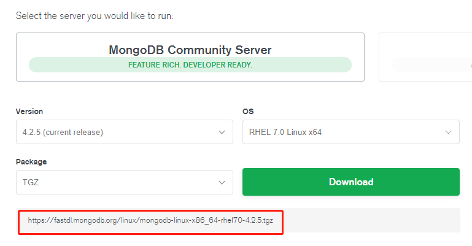
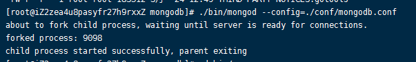
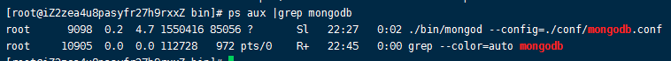
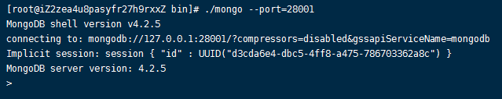
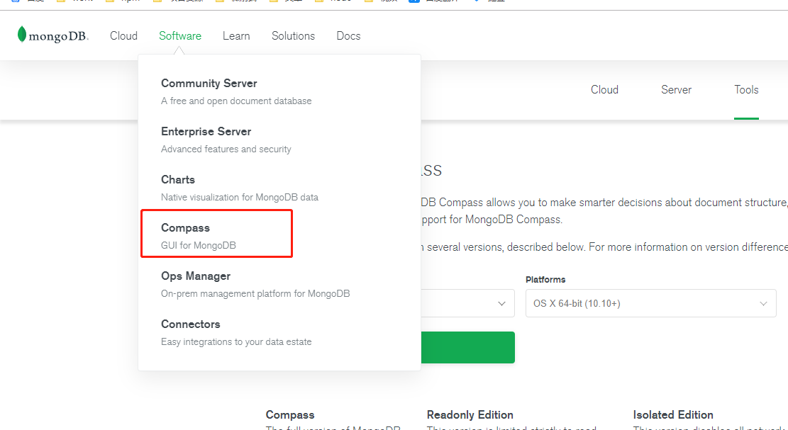
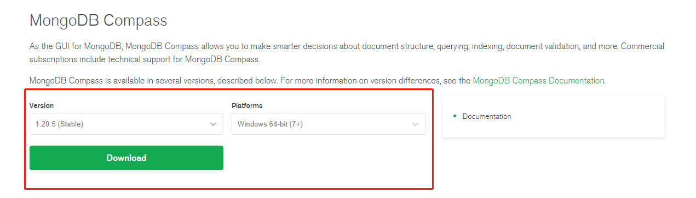

003-在centos的安装
1、下载
在官网上没有centos版的，选择RHEL版，和centos同家公司的产品。

复制下载链接，在Centos上执行下载命令
wget https://fastdl.mongodb.org/linux/mongodb-linux-x86_64-rhel70-4.2.5.tgz
2、安装
# 解压
tar -zxvf mongodb-linux-x86_64-rhel70-4.2.5.tgz
# 把解压后的mongodb剪切到本地的local文件夹，并且重命名为mongodb
mv mongodb-linux-x86_64-rhel70-4.2.5/ /usr/local/mongodb
# 进入mongodb
cd /usr/local/mongodb
# 创建data、logs、conf文件夹用来存放数据和日志
mkdir data
mkdir logs
mkdir conf
# 进入conf，创建mongodb.conf文件
cd conf/
touch mongodb.conf
# 设置配置，内容如下
vim mongodb.conf
mongodb.conf配置内容：
dbpath=/usr/local/mongodb/data
logpath=/usr/local/mongodb/logs/mongodb.log
port=28001
bind_ip=0.0.0.0
logappend=true
fork=true
auth=false
bind_ip=0.0.0.0: 的作用是设置所有IP都可以连接mongodb，如果设置成127.0.0.1的话，就只能在服务器本地访问，其他地方（比如window通过可视化工具）无法连接上fork=true: 设置后台运行auth=true: 开启认证服务，为了方便远程无密码连接先设置false
3、启动服务端服务
进入bin，执行mongod，并且让其去读取之前我们写好的配置
cd ../bin/
./mongod --config=../conf/mongodb.conf

可以通过ps aux |grep mongodb查看进程

4、启动客户端验证
验证：执行bin下的mongo命令，因为我们之前配置文件里面指定了port=28001，所以执行mongo命令也需要指定那个端口，能进入控制台说明安装完成
./mongo --port=28001

5、配置全局环境变量
通过上面的方式配置的mongo/mongod，每次需要进入到/usr/local/mongodb-4.4.3/bin 才能执行mongo/mongod命令
如果觉得麻烦，可以把改bin目录配置到环境变量里面，这样在任何目录都可以自行
vim /etc/profile
在最后面添加
MONGO_HOME=/usr/local/mongodb-4.4.3/bin
export PATH=$MONGO_HOME:$PATH
然后重启
source /etc/profile
这样就可以随时执行nginx命令了
mongod --help # mongod
mongo --help # mongo
6、关闭mongodb
执行killall mongod
7、远程连接
新版的mongodb据说默认集成了，如果没有看到的的话可以用下面的方式自己安装，compass下载链接

选择需要的平台下载

推荐wind下载zip，用exe的没有让我们选择安装路径，都不知道装到哪儿了。用zip的解压即可运行